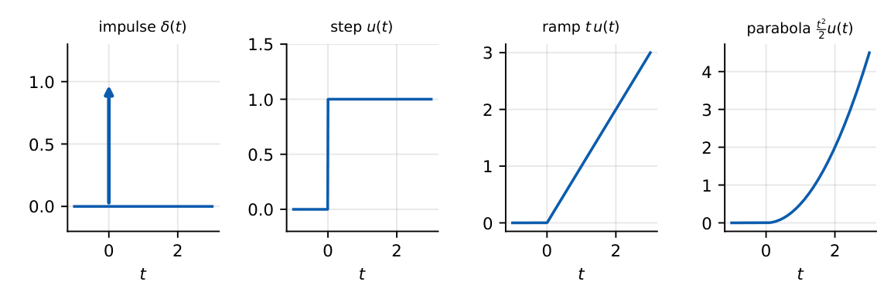

Standard Test Signals
In this chapter
Laplace transforms of test signals, the derivative/integral relation between them, and which test signal reveals which specification. Basis for steady-state error (Chapter 10).
7.1 Core concept
Real inputs are unknown, so systems are judged by their response to a few standard signals. They form a family in which each is the integral of the previous one.

| Signal | \(r(t)\) | \(R(s)\) | Tests |
|---|---|---|---|
| Impulse | \(\delta(t)\) | \(1\) | impulse response \(h(t)\), stability |
| Step | \(u(t)\) | \(\dfrac1s\) | transient specs, position error |
| Ramp | \(t\,u(t)\) | \(\dfrac1{s^2}\) | velocity (tracking) error |
| Parabola | \(\dfrac{t^2}{2}u(t)\) | \(\dfrac1{s^3}\) | acceleration error |
| Exponential | \(e^{-at}u(t)\) | \(\dfrac1{s+a}\) | decaying inputs |
| Sinusoid | \(\sin\omega t\) | \(\dfrac{\omega}{s^2+\omega^2}\) | frequency response |
7.2 Relationships
\(\delta(t)=\dfrac{d}{dt}u(t)\), \(u(t)=\dfrac{d}{dt}\big(t\,u(t)\big)\), \(t\,u(t)=\dfrac{d}{dt}\Big(\dfrac{t^2}{2}u(t)\Big)\).
For an LTI system the response to the derivative of an input is the derivative of the response: \(c_{imp}=\dfrac{d}{dt}c_{step}\), \(c_{step}=\dfrac{d}{dt}c_{ramp}\). Equivalently, \(c_{step}=\mathcal L^{-1}\{G/s\}\), \(c_{ramp}=\mathcal L^{-1}\{G/s^2\}\).
7.3 Choosing a test signal
Step: overshoot, rise time, settling time. Ramp: whether the output tracks a steadily moving target (servo, antenna). Parabola: tracking constant acceleration (missile, satellite). Impulse: gives \(h(t)\) and hence \(G(s)\); used for stability. Sinusoid: Bode/Nyquist analysis.
Unit step response of a system is \(1-e^{-3t}\). Impulse response: \(\dfrac d{dt}(1-e^{-3t})=3e^{-3t}\). Ramp response: \(\int(1-e^{-3t})dt=t-\dfrac13(1-e^{-3t})\).
\(\mathcal L\{2t\,u(t)+3u(t)-4\delta(t)\}=\dfrac2{s^2}+\dfrac3s-4\).
Each extra \(1/s\) in the input raises the input “order”: step \(\to\) ramp \(\to\) parabola. A system that follows a signal of order \(k\) with finite error needs at least \(k\) integrators (types 0, 1, 2 for step, ramp, parabola).
The unit parabola in control is \(t^2/2\) (transform \(1/s^3\)), not \(t^2\) (transform \(2/s^3\)). Watch for the multiplier in “\(A\,t^2/2\)” vs “\(A\,t^2\)”.
Q1. Laplace transform of the unit ramp: (A) \(1/s\) (B) \(1/s^2\) (C) \(1/s^3\) (D) \(s\).
Q2. If the step response is \(c(t)\), the impulse response is (A) \(\int c\) (B) \(\dot c\) (C) \(c^2\) (D) \(c/t\).
Q3. The unit impulse has Laplace transform (A) \(1\) (B) \(1/s\) (C) \(s\) (D) \(0\).
Answers: Q1 (B). Q2 (B). Q3 (A).
Q4. \(G(s)=\dfrac1{s+2}\). Unit-step response at \(t\to\infty\) is (A) \(0\) (B) \(0.5\) (C) \(1\) (D) \(2\).
Q5. Step response \(=2(1-e^{-t/2})\). The impulse response is (A) \(e^{-t/2}\) (B) \(2e^{-t/2}\) (C) \(\tfrac12e^{-t/2}\) (D) \(e^{-t}\).
Answers: Q4 (B): \(G(0)=0.5\). Q5 (A): derivative \(=2\cdot\tfrac12e^{-t/2}\).
Q6. Ramp response of \(G=1/(s+1)\): value of \(c(t)-t\) as \(t\to\infty\) is .
Answers: Q6: \(c=t-1+e^{-t}\), so \(-1\).
Q7. Which are correct? (A) \(\mathcal L\{t^2u(t)\}=2/s^3\) (B) \(\delta=\dot u\) (C) ramp is the integral of step (D) impulse gives \(H(s)\) directly.
Answers: Q7: all four.
A system’s unit-step response is \(c_s(t)=1-e^{-t}\). For the rectangular pulse \(u(t)-u(t-1)\), linearity and time-invariance give \(c(t)=c_s(t)-c_s(t-1)u(t-1)\); at \(t=2\) this is \((1-e^{-2})-(1-e^{-1})=e^{-1}-e^{-2}=0.233\).
T1. Find \(\mathcal L\{\tfrac12t^2\}\) and the input whose transform is \(5/s^2\).
T2. Step response of \(G=2/(s+2)\); then its ramp response.
Answers: T1: \(1/s^3\); \(5t\). T2: \(1-e^{-2t}\); \(t-\tfrac12(1-e^{-2t})\).
- \(\delta\to1\), \(u\to1/s\), ramp \(\to1/s^2\), parabola \(t^2/2\to1/s^3\).
- Step \(=\int\) impulse; response chain follows the same derivative/integral rule.
- Step: transient; ramp: velocity error; parabola: acceleration error; impulse: \(h(t)\).